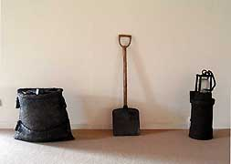
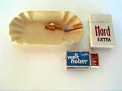
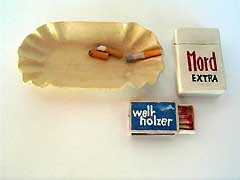
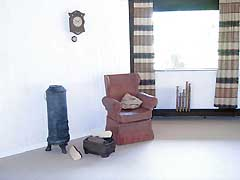
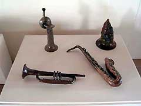
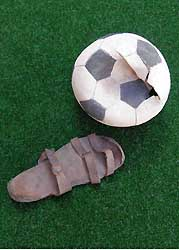
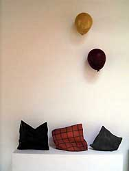

|
Antonia Schulze
German ceramist

|  |
Antonia Schulze does not come up on many art
critics' radars - her name is a little-known in the world
of global ceramic arts. Schulze, born in 1909, didn't start
her carreer as an artist until she was nearly 60 years old,
after surviving two world wars, experiencing family life and
working as a tailor and dressmaker.
Her detailed trompe l'oeil sculpture of everyday objects
such as cushions, paper bags, books, hats, balloons etc. are
rendered uncannily realistically, inviting comparisons with
such sculptors as Marilyn Levine, Paul Dresang, Sylvia Hyman
or Richard Newman. Some of her works are subtlety socio-critical,
such as 'Idyll with Sofa' or 'Chips and Smoke' (not the cigarette
brand 'Murder').
|
  

A recent exhibition - The Magic of the Mundane - at the
ceramics museum 'Keramikmuseum
Westerwald' in Höhr-Grenzhausen, Germany, the latest
showcasing of her work, opened on 11 September. Her iconic installation
with a coal sack, shovel and miner's lamp is on loan from the Kunsthalle
Recklinghausen.

 Die MAGIE DES ALLTÄGLICHEN - Völlig unbekannt in der keramisch
orientierten Szene machte sich Antonia Schulze im Feld der Freien
Künste einen Namen. 1909 geboren, nach Kriegswirren, den familiären
Verpflichtungen und als gelernte, freiberuflich tätige Schneiderin
erwarb sie sich spät nicht nur präzise keramische Kenntnisse
Ende der 60ger Jahre sondern stetig auch einen Platz in der Kunstszene.
Sie sagt selbst: "Statt Vasen und Geschirr herzustellen bildete
ich alle Formen nach, zu denen ich Lust hatte - Sofakissen, Tüten,
Bücher, Hüte, Handtaschen, Luftballons, Musikinstrumente."
Es kamen Plakate - keramische natürlich- für Litfasssäulen,
Vorhänge im Stil der 60er, Nachttöpfe und anderes Gerät
in Email als Kuriositäten hinzu, die so irreführend sind
in ihrer Detailgenauigkeit, dass der Betrachter der Augentäuscherei
erst durch Tasten, durch direktes „Be-Fühlen“ ein
Ende machen kann. Die Künstlerin spielt mit dem Sinn für
Realität so gekonnt und zeitlich so früh, dass folgende
Ausstellungen ihre sehr persönliche "Kultur-geschichte
des Alltags" publik werden ließen. Spektakulär ist
die Installation Kohlesack, Spaten und Grubenlampe, die als Leihgabe
der Kunsthalle Recklinghausen in der Ausstellung im Keramikmuseum
Westerwald präsent ist. Ausstellungseröffnung:
11. September, 11 Uhr im KMW in Höhr-Grenzhausen, Germany,
Lindenstraße 13, Tel. +49 (0)2624 946010, info@keramikmuseum.de.
Die MAGIE DES ALLTÄGLICHEN - Völlig unbekannt in der keramisch
orientierten Szene machte sich Antonia Schulze im Feld der Freien
Künste einen Namen. 1909 geboren, nach Kriegswirren, den familiären
Verpflichtungen und als gelernte, freiberuflich tätige Schneiderin
erwarb sie sich spät nicht nur präzise keramische Kenntnisse
Ende der 60ger Jahre sondern stetig auch einen Platz in der Kunstszene.
Sie sagt selbst: "Statt Vasen und Geschirr herzustellen bildete
ich alle Formen nach, zu denen ich Lust hatte - Sofakissen, Tüten,
Bücher, Hüte, Handtaschen, Luftballons, Musikinstrumente."
Es kamen Plakate - keramische natürlich- für Litfasssäulen,
Vorhänge im Stil der 60er, Nachttöpfe und anderes Gerät
in Email als Kuriositäten hinzu, die so irreführend sind
in ihrer Detailgenauigkeit, dass der Betrachter der Augentäuscherei
erst durch Tasten, durch direktes „Be-Fühlen“ ein
Ende machen kann. Die Künstlerin spielt mit dem Sinn für
Realität so gekonnt und zeitlich so früh, dass folgende
Ausstellungen ihre sehr persönliche "Kultur-geschichte
des Alltags" publik werden ließen. Spektakulär ist
die Installation Kohlesack, Spaten und Grubenlampe, die als Leihgabe
der Kunsthalle Recklinghausen in der Ausstellung im Keramikmuseum
Westerwald präsent ist. Ausstellungseröffnung:
11. September, 11 Uhr im KMW in Höhr-Grenzhausen, Germany,
Lindenstraße 13, Tel. +49 (0)2624 946010, info@keramikmuseum.de.
More Featured Artists
More Articles
|

{kind=link}
{kind=link}
{kind=link}
{kind=link}
{kind=link}
{kind=link}